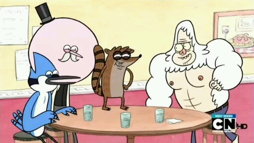
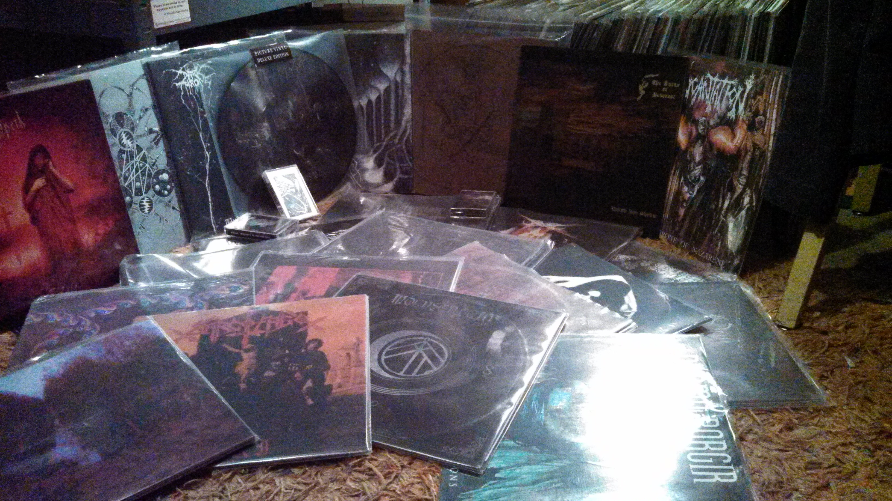

In addition to aspiring to be a programmer I have many other interests and hobbies
My famliy
Music
Art
Nature
Most important things in my life are my wife and kids, they mean the world to me. (not actually a picture of us)
Although I'm not a very big fan of talking about it I am a huge fan of a lot of different kinds of music in many formats but mainly on vinyl.
One of my favorite things to do is to create art which is a big part of what drew me to coding. my main medias of choice tend to be paint(acrylic) and pen and ink.
When I can get a chance I love to get out and spend time in nature, be it hiking or camping a few hours spent out in the wilderness never fails to brighten my mood.
- 
- 